화약류관리기사 (2016-03-06 기출문제)
1과목: 일반화약학
1. 다음 중 무연화약의 종류가 아닌 것은?
- 싱글베이스화약
- 트리플베이스화약
- 더블베이스화약
- 흑색화약
(정답률: 95%)

2. 목분을 연소시킬 때 약 961L의 산소가 부족하여 산소 공급제로 KNO3를 사용하고자 한다. 이 때 첨가할 KNO3는 약 몇 kg 인가? (단, KNO3 1kg 당 산소는 277L가 발생한다.)
- 1.5
- 2.5
- 3.5
- 4.5
(정답률: 87%)
3. 산업용폭약에 대한 규정에서 다이너마이트는 니트로겔을 기제로 하고, 그 함유량이 몇 wt%를 초과하는 폭약을 말하는가?
- 3
- 6
- 20
- 45
(정답률: 74%)
4. PETN 의 1g 당 산소평형 값은?
- -0.101
- +0.035
- -0.387
- +0.200
(정답률: 83%)
5. 폭굉(爆轟)과 폭연(爆燃)의 연소속도 관계를 옳게 나타낸 것은?
- 폭굉 + 폭연 = 0
- 폭굉 = 폭연
- 폭굉 < 폭연
- 폭굉 > 폭연
(정답률: 94%)
6. 화약류의 낙추감도 시험에서 임계폭점이란?
- 100% 폭발할 수 있는 높이 중 최소값
- 폭발되지 않는 높이 중 최고값
- 시료 중 50%가 폭발하는 값
- 100% 폭발되는 최고값
(정답률: 89%)
7. 화약류의 폭속에 관한 설명으로 옳은 것은?
- 폭속이 큰 폭약일수록 파괴력은 작아진다.
- 약포의 지름이 크게 되면 폭속은 작아진다.
- 충전비중(밀도)을 작게 하면 폭속은 크게 된다.
- 약포를 용기 중에 넣으면 폭속은 크게 된다.
(정답률: 87%)
8. 니트로셀룰로오스의 제조 원료는?
- 에틸렌글리콜
- 펜타에리트리트
- 글리세린
- 식물섬유인 정제된 솜
(정답률: 88%)
9. 뇌관에서 아지화납을 기폭약으로 사용할 때 구리재질의 내관이나 관체를 사용할 수 없는 이유는?
- 예민한 화합물인 아지화구리가 만들어져 위험하기 때문이다.
- 둔감한 화합물인 아지화구리가 만들어져 뇌관이 불폭 되기 때문이다.
- 아지화납은 구리를 녹이는 성질히 있기 때문이다.
- 아지화납의 위력에 비해 구리의 강도가 약하기 때문이다.
(정답률: 80%)
10. 8호 전기뇌관에 관한 설명으로 옳은 것은?
- 관체의 재질로 구리, 알루미늄을 사용할 수 없다.
- 점화약 점화 후 뇌관이 폭발할 때까지의 시간을 연소속도라 한다.
- 납판시험에서 두께 4mm의 납판을 관통해야 한다.
- 0.25A의 직류 전류에서 기폭해야 한다.
(정답률: 90%)
11. 도폭선에 대해서 옳게 설명한 것은?
- 흑색화약을 심약으로 한 화공품이다.
- 연소속도가 1m 당 100~140sec 정도이다.
- 폭약의 폭속을 측정할 때 기준 화약으로서 이용한다.
- 제2종 도폭선은 폭약을 주석이나 납관에 채운 것이다.
(정답률: 65%)
12. 화약 성능시험 검사의 연결이 잘못된 것은?
- 도트리쉬법 - 폭속시험
- 순폭시험 - 뇌관의 강도시험
- 유발시험 - 마찰감도시험
- 가열시험 - 안정도시험
(정답률: 81%)
13. 질산암모늄 유제폭약(Ammonium nitrate fuel oil)에 대한 설명으로 옳지 않은 것은?
- ANFO 폭약으로 갱내에서 자유롭게 사용할 수 있다.
- 사용되는 질산암모늄은 프릴형태를 사용한다.
- 유제는 인화점이 50℃ 이상인 경유를 주로 사용한다.
- 배합비는 질산암모늄 94%, 유제 6%의 비율일 때가 적절하다.
(정답률: 78%)
14. 연화의 불꽃 색상과 그에 해당하는 원료를 연결한 것 중 틀린 것은?
- 적(Red) - CuCO3
- 녹(Green) - Ba(ClO3)2
- 황(Yellow) - Na2C2O4
- 백(White) - Al
(정답률: 82%)
15. 니트로셀룰로오스의 제조법이 아닌 것은?
- Abel식
- Nathan식
- Thomson식
- Selwig-lange식
(정답률: 75%)
16. 뇌관 1개의 저항이 1.4Ω 인 전기뇌관 30발을 직렬로 결선하여 제발하자면 최저 몇 V의 전압이 필요한가? (단, 단선 1m 의 저항 0.02Ω, 총연장 100m로 하고, 발파기의 내부저항은 0이며, 뇌관 1개당 소요전류는 2A로 한다.)
- 40V
- 50V
- 66V
- 88V
(정답률: 89%)
17. 다음은 흑색화약의 폭발반응식이다. ( ) 에 알맞은 수치를 차례대로 나타낸 것은?
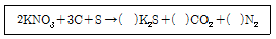
- 2, 3, 1
- 1, 3, 1
- 1, 3, 2
- 1, 2, 3
(정답률: 90%)
18. 다른 폭약의 기폭 목적에 사용할 수 있는 기폭약이 아닌 것은?
- 아지화납
- 테트릴
- 뇌홍
- 디디엔피
(정답률: 76%)
19. NG를 기본 물질로 하는 폭약은?
- 카알릿
- 흑색화약
- ANFO
- 다이너마이트
(정답률: 95%)
20. 화공품에 속하지 않는 것은?
- 실포, 공포
- 도폭선
- 펜트리트
- 전기뇌관
(정답률: 80%)
2과목: 발파공학
21. 발파효과에 영향을 주는 요인으로 다음 중 가장 거리가 먼 것은?
- 지연시차
- 천공간격
- 장약량
- 발파장비
(정답률: 60%)
22. 비전기식 뇌관에 대한 설명으로 틀린 것은?
- Tube의 전파속도는 약 2000m/sec 이다.
- 비전기식 뇌관 발파시에는 cut-off 등을 고려할 필요가 있다.
- 연결뇌관의 tube길이는 가급적 짧게 하되 30cm 이상은 되어야 한다.
- 밀폐되어 있는 Tube 끝은 방습, 내수를 위해 절단하지 않고 사용한다.
(정답률: 35%)
23. 다이너마이트가 폭발 시 폭발온도가 약 3,000°K, 생성가스량은 850ℓ/kg이다. 이 때 화약의 힘으로 표시되는 비에너지(specific energy , f)는?
- 3.53 atm-ℓ
- 3,530 atm-ℓ
- 9,340 atm-ℓ
- 13,000 atm-ℓ
(정답률: 24%)
24. 뇌관에 의한 폭약의 기폭작용에 해당하지 않는 것은?
- 관체 파편에 의한 작용
- 백금전교의 발화에 사용되는 전기에 의한 작용
- 뇌관 폭발시의 가스 충동에 의한 작용
- 폭발열이 폭약에 직접 전달되어 폭약을 가열하는 작용
(정답률: 57%)
25. 다음 중 전기발파를 하여도 무방한 경우로 가장 타당한 것은?
- 천둥, 번개가 일어나고 있을 때
- 고압선 부근에서의 발파
- 방송국 부근에서의 발파
- 고기압 지대에서의 발파
(정답률: 62%)
26. 대구경 무장약공을 이용한 수평공 심빼기 방법에 대한 설명으로 옳지 않은 것은?
- 무장약공은 직경이 클수록 효과적이다.
- 설계 시 무장약공과 장약공과의 거리가 확대공의 기폭순서가 중요하다.
- 심빼기의 위치는 발파효과를 고려하여 터널단면의 중앙에만 위치시킨다.
- 사용 폭약이나 점화 방법에 따라 사압현상이 발생할 수 있다.
(정답률: 64%)
27. 수중발파 시 발생하는 충격파의 특성에 관한 설명 중 틀린 것은?
- 수중충격파는 수중현수발파와 수중부착발파시 발생한다.
- 가스구가 팽창과 수축을 반복하면서 수면을 향해 상승함으로써 발생하는 압력파를 버블펄스라 한다.
- 수중천공발파 시에는 지반-수압력파가 발생하지 않는다.
- 수중현수발파 시 버블펄스의 압력크기는 수중충격파의 6분의 1정도이지만 펄스폭은 약 3배가 된다.
(정답률: 59%)
28. 발파진동이 시설물과 구조물에 미치는 영향을 고려하지 않으면 큰 피해를 입게 되므로 발파진동을 억제하거나 감소시키는 방법을 사용하여야 하는데 계단발파 시 지발 당 장약량과 최대입자속도를 줄이는 방법으로 가장 거리가 먼 것은?
- 구멍깊이를 줄인다.
- 구멍의 직경을 되도록 작게 한다.
- 한 장약공에서 폭약을 각각 분리 장약하고 순폭은 순차적으로 한다.
- 전자 또는 기계식 타이머를 이용하여 지연시간을 최대한 짧게 하여야 한다.
(정답률: 59%)
29. 건물 해체발파 전 발파대상 구조물의 주요부위에 장전된 장약의 효율을 높이기 위해 주요부위를 파쇄하는 작업을 사전 취약화 작업이라고 한다. 다음 중 일반적으로 적용되는 사전 취약화 작업의 범위에 해당하지 않는 구조물의 부위는?
- 기둥
- 내력벽
- 비내력벽
- 코아부
(정답률: 72%)
30. 터널발파에서 평행공 심빼기 발파공법을 적용 시, 굴진율 95%을 얻기 위한 천공장은? (단, 무장약공의 직경 102mm이며 무장약공의 천공장과 장약공의 천공장은 동일하다.)
- 3.2m
- 2.5m
- 3.0m
- 1.8m
(정답률: 26%)
31. 발파 작업 시 발생되는 지반진동을 감소하기 위한 방법으로 올바르지 못한 것은?
- 대구경 발파는 소구경 발파에 비해 장약밀도가 크면 진동이 크게 발생하므로 소구경을 사용하는 것이 좋다.
- 최소 저항선이 너무 크거나 공저 장약이 많을 경우 진동의 발생이 크게 되므로 최소 저항선을 적정하게 유지하여야 한다.
- 연암에는 폭속이 낮은 폭약을 사용하며, 경암에는 폭속이 높은 폭약을 사용한다.
- 지반진동 발생과 장약량은 비례하므로 표준발파에 비해 약장약을 하여 시행하여야 한다.
(정답률: 28%)
32. Livingston의 crater 모식도에서 압축에 해당되는 것은?
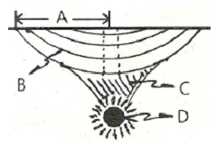
- A
- B
- C
- D
(정답률: 49%)
33. 계단식 발파에서 발파의 충격으로 주변 암석이 필요 이상으로 파괴 또는 균열이 생기는 현상은?
- 오버 버든(Over burden)
- 백 브레이크(Back break)
- 오버 행(Over hang)
- 먹 파일(Muck pile)
(정답률: 58%)
34. 발파계수에 관한 설명으로 틀린 것은?
- 암석계수는 암석 약 1m3를 발파할 때 필요로 하는 폭약량을 뜻한다.
- 강력한 폭약일수록 폭약계수 값은 크게 된다.
- 전색계수 1은 완전한 전색으로 본다.
- 누두공의 크기와 모양은 누두지수의 함수 f(n)과 관계된다.
(정답률: 52%)
35. 누두공 시험을 하여 표준장약량을 구할 때 필요한 자료가 아닌 것은?
- 장전한 폭약의 양
- 폭약의 직경과 장약밀도
- 천공깊이와 장전 심도
- 발파 후 형성된 누두공의 크기
(정답률: 25%)
36. NONEL system에서는 어떠한 발파회로 결선법이 가능한가?
- 직렬 결선법만 가능하다.
- 병렬 결선법만 가능하다.
- 직병렬 결선법만 가능하다.
- 직렬, 병렬, 직병렬 결선법 모두 가능하다.
(정답률: 56%)
37. 발파에 의해 발생한 지반운동을 표시하는 변위, 입자속도, 가속도와 주파수에 대한 설명으로 옳은 것은?
- 변위는 지반진동에 의해 지반중의 입자가 압축되는 양으로 시추 코어 분석을 실시하여 측정할 수 있다.
- 입자속도는 변위의 시간에 대한 변화비율이며 이것은 속도진폭으로 표시된다.
- 가속도는 변위속도의 거리에 대한 비율이며 이것은 가속도진폭으로 표시된다.
- 1초 간격으로 반복되는 파의 수를 주파수라 하며 파장의 역수로 나타낼 수 있다.
(정답률: 28%)
38. 직교하는 2자유면의 암석발파에서 최소저항선은 120cm이며 공간격도 최소저항선과 동일하다. 이때 천공깊이를 150cm 수직천공하여 발파할 경우 한 공당 채석량은? (단, 암석 비중 1.9이다.)
- 3.4 ton
- 4.1 ton
- 5.1 ton
- 6.2 ton
(정답률: 43%)
39. 다음 그림은 심빼기 발파 중 평행천공의 한 방법을 나타낸 그림이다. 다음 그림이 도시하고 있는 발파법은?
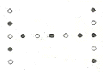
- Clover leaf cut
- Box cut
- Line cut
- Spiral cut
(정답률: 50%)
40. 발파용어에 대한 설명으로 틀린 것은?
- 추력 : 착암기를 사람의 힘이나 Leg feed로 밀어주는 힘을 말한다.
- Stall : 착암기의 압축공기압 또는 유압이 너무 낮을 경우 생기는 현상이다.
- Strip ratio : 노천에서의 연암과 경암의 체적비를 말한다.
- Look-out : 계획된 터널의 규격을 유지하기 위한 방법으로 외곽공의 천공 시 굴착예정선보다 외곽으로 10cm+3cm/m 정도를 유지한다.
(정답률: 58%)
3과목: 암석역학
41. 전단강도가 10MPa인 암석판에 펀치테스트에 의해 직경 3cm의 구멍을 뚫기 위하여 수직으로 가해야 할 최소한의 힘은? (단, 암석판의 두께는 2cm 이다.)
- 12.5kN
- 15.0kN
- 18.8kN
- 22.3kN
(정답률: 35%)
42. Burgers 물체의 역학적 모형에 대한 설명으로 옳은 것은?
- Maxwell 모형과 Kelvin 모형을 병렬로 연결한 형태이다.
- 암석의 순간적 탄성변형, 1차 및 2차 Creep 거동을 나타낼 수 있다.
- Burgers 물체에 응력이 가해지면 순간적으로 탄성 변형률이 발생하고 이후에는 비선형적으로 변형률이 감소하게 된다.
- Burgers 물체에 가해진 응력을 제거하면 발생한 모든 변형률은 시간이 경과함에 따라 회복되게 된다.
(정답률: 63%)
43. Mohr-Coulomb의 파괴식을 σ-r좌표계에서 도시한 결과 점착력(c)이 10MPa, 내부마찰각(ø)이 45°라면 주응력공간(σ1-σ3)좌표계에 도시하였을 때의 기울기 값은?
- 3.83
- 4.83
- 5.83
- 6.83
(정답률: 23%)
44. Q-system의 평가요소에 대하여 다음과 같은 결과를 얻었다. RMR값과 RMR에 의한 암반등급은? (단, RMR과 Q의 관계식은 Bieniawski(1976)의 제안식을 이용한다.)
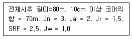
- 53.0, 보통
- 53.0, 우수
- 63.5, 우수
- 63.5, 매우 우수
(정답률: 48%)
45. 암석시험 조건이 암석의 압축강도에 미치는 일반적인 영향으로 옳은 것은?
- 시험편의 길이가 커질수록 강도는 증가한다.
- 시험편 단면의 모양이 원형에 가까워질수록 파괴하중은 작아진다.
- 하중 재하 속도가 증가할수록 강도가 작아진다.
- 시험편의 직경에 비해 길이가 수배 이상 크면 좌굴현상이 일어날 수 있다.
(정답률: 42%)
46. AE(Acoustic Emission) 시험법에 대한 설명으로 가장 적절한 것은?
- 시추공 주변의 응력해방으로 인해 발생한 암반변형으로부터 초기응력을 구하는 방법이다.
- 비탄성변형률이 증가하는 경향을 통해 초기응력을 구하는 방법이다.
- 암석코어를 이용하여 일축압축하중 하에서 응력에 따른 암석 변형을 측정함으로써 초기응력을 규명하는 방법이다.
- 암석코어를 이용하여 일축압축하중 하에서 미세균열 거동에 따른 미소파괴음을 통해 초기응력을 규명하는 방법이다.
(정답률: 45%)
47. 체적 팽창률(volumetric dilatancy, e)을 나타내는 식은? (단, Єz, Єy, Єz는 x, y, z 방향의 변형률)
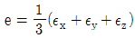
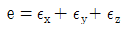
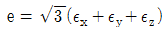
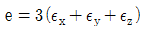
(정답률: 52%)
48. 삼축압축시험에서 봉압의 효과로 맞는 것은?
- 봉압이 증가할수록 균열성장을 촉진한다.
- 봉압이 증가할수록 방아쇠효과(trigger effect)에 의해 연성에서 취성거동으로 변화한다.
- 봉압이 증가하면 전단현상을 억제하고, 전단탄성계수는 증가한다.
- 봉압이 증가하면 포아송비는 1에 가까워진다.
(정답률: 42%)
49. 평면응력(Plane Stress) 상태의 탄성요소에 σx, σy, γxy의 세 응력이 작용할 때 응력과 변형률의 관계식으로 틀린 것은?
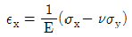
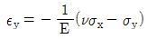
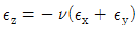
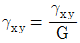
(정답률: 50%)
50. 2차원 상태의 미소평면에 σx=20MPa, σy=40MPa, τxy=5MPa 의 응력이 작용하고 있을 때 2차원 Mohr 응력원의 반경은?
- 11.18MPa
- 12.39MPa
- 13.19MPa
- 14.35MPa
(정답률: 36%)
51. 정수압 P가 작용하는 암반 내에 원형공동을 굴착하였을 때 공동벽면에 집중되는 접선방향응력(σθ)의 크기는? (단, 암반은 균질, 등방성이며 탄성적이다.)
- P
- 2P
- 3P
- 4P
(정답률: 52%)
52. 암반 내 급작스런 파괴인 Rock Burst 현상이 발생하기 위한 암반조건으로 옳지 않은 것은?
- 국부적인 응력집중이 발생한 암반
- 깊은 심도의 암반
- 취성도가 큰 암반
- 강도가 낮은 암반
(정답률: 48%)
53. Hoek-Brown의 파괴조건식이 적용될 수 있는 암반 조건 중 가장 거리가 먼 것은?
- 균질하고 등방성을 나타내는 암반
- 편리나 층리가 발달된 암반에서 연약면에 의해 암반의 거동이 좌우되는 경우
- 무결암이나 절 리가 심하게 불규칙적으로 발달하여 거시적으로 등방성 암반으로 간주할 수 있는 경우
- 2개의 절리군의 발달된 암반에서 2개 절리군의 절리면이 풍화되지 않아 신선하고, 절리면의 거칠기가 크며, 2개 절리군의 방향성이 모두 특정방향으로 치우치지 않는 경우
(정답률: 35%)
54. 소규모의 절리가 발달한 암반사면에서 일반적으로 발생할 수 있는 파괴형태로 가장 거리가 먼 것은?
- 평면파괴
- 원호파괴
- 쐐기파괴
- 전도파괴
(정답률: 49%)
55. 터널 주변에 발생한 이완영역의 거동에 대한 정보를 얻는데 적당한 계측기가 아닌 것은?
- 간극수압계
- 내공변위계
- 지표침하계
- 다점 지중변위계
(정답률: 39%)
56. 역학적 모형 중 Maxwell 물체의 경우 하중을 매주 빠르게 증가시킬 때 어떤 거동을 보이는가?
- 탄성거동
- 점성거동
- 소성거동
- 점탄성거동
(정답률: 48%)
57. 한 변이 5cm인 정육면체 암석 블록이 경사면위에 놓여 있다. 마찰각이 35°, 경사면의 각도가 40°일 때 이 암석 블록의 거동은?
- 블록의 미끄러짐과 전도가 동시에 발생한다.
- 블록은 안정하고 미끄러짐이나 전도가 일어나지 않는다.
- 블록의 전도가 발생하지만 미끄러짐은 일어나지 않는다.
- 블록의 미끄러짐이 일어나지만 전도는 발생하지 않는다.
(정답률: 34%)
58. 불연속면을 평사투영망에 표시하는 것에 대한 설명으로 틀린 것은?
- 불연속면에 수직한 직선의 투영점을 이 불연속면의 극점이라 부른다.
- 대원상의 점들은 이 불연속면 상에 놓여있는 직선들로 투영점들이다.
- 투영망의 중심에서 두 대원의 교점까지 각도를 읽으면 이 값이 두 불연속면의 교선의 경사각이 된다.
- 임의의 불연속면을 나타내는 대원의 양끝점을 연결하는 선은 투영망의 중심을 지나며 이 선은 불연속면의 주향과 평행하다.
(정답률: 31%)
59. 다음 불연속면의 특성 중 암반과 불연속면의 투수성에 가장 큰 영향을 미치는 것은?
- 간극
- 방향성
- 벽면강도
- 거칠기
(정답률: 57%)
60. 변형률경화에 대한 설명으로 알맞은 것은?
- 일정한 크기의 하중 하에서 변형률이 지속적으로 증가하는 현상이다.
- 암석에 응력을 가하고 제거하는 반복응력을 지속적으로 적용하면 강도가 저하하는 현상이다.
- 소성변형률이 증가함에 따라 항복응력이 커지는 현상이다.
- 탄성변형률과 소성변형률이 동시에 존재하는 현상이다.
(정답률: 65%)
4과목: 화약류 안전관리 관계 법규
61. 지상에 설치하는 3급 저장소의 위치 · 구조 및 설비의 기준으로 적합하지 않는 것은?
- 폭약과 화공품을 동시에 저장하기 위한 격벽의 기초는 저장소의 기초에 두께 10cm이상의 콘크리트로 할 것
- 지붕은 폭발한 때에 가볍게 날리어 흩어질 수 있는 건축자재로 할 것
- 저장소의 벽(앞면의 벽은 제외)은 두께 10cm이상의 철근콘크리트로 할 것
- 저장소의 주위에는 흙둑 또는 간이흙둑을 설치할 것
(정답률: 35%)
62. 화약류의 안정도시험에 대한 설명으로 옳지않은 것은?
- 화약류를 수입한 사람은 수입한 날부터 30일 이내에 수입한 화약류에 대한 안정도시험을 하여야 한다.
- 화약류의 안정도를 시험한 사람은 그 시험결과를 경찰청장에게 보고하여야 한다.
- 질산에스텔의 성분이 들어있지 아니한 폭약이라도 제조일로부터 3년이 지나면 안정도시험을 하여야 한다.
- 화약류의 안정도시험결과 대통령령이 정하는 기술상의 기준에 미달하는 화약류는 폐기하여야 한다.
(정답률: 58%)
63. 화약류의 취급에 대한 설명으로 옳지 않은 것은?
- 화약류를 취급하는 용기는 철재 또는 그 밖의 견고한 구조의 것으로 할 것
- 폭약과 화공품은 각각 다른 용기에 넣어 취급할 것
- 굳어진 다이나마이트는 손으로 주물러서 부드럽게 할 것
- 사용에 적합하지 아니한 화약류는 화약류 저장소에 반납할 것
(정답률: 53%)
64. 방폭식 구조로 할 수 있는 위험공실에 해당하지 않는 것은?
- 정체량 300kg 이하의 미진동파쇄기의 위험공실
- 정체량 200kg 이하의 꽃불류 등의 위험공실
- 정체량 100kg 이하의 폭약(기폭약을 제외한다)의 위험공실
- 정체량 600kg 이하의 화약(흑색화약을 제외한다)의 위험공실
(정답률: 34%)
65. 화약류의 양도 · 양수 허가와 관련한 설명으로 옳지 않은 것은?
- 판매업자가 판매할 목적으로 화약류를 양도·양수하는 경우에는 양도·양수허가가 필요없다.
- 화약류의 수입허가를 받은 사람이 그 수입과 관련하여 화약류를 양도·양수하는 경우에는 양도·양수허가가 필요없다.
- 사용지가 특정되지 아니한 경우에는 양수하고자 하는 사람의 주소지를 관할하는 경찰서장의 허가를 받아야 한다.
- 화약류의 양수허가의 유효기간은 6개월을 초과할 수 없으며, 1회에 허가할 수 있는 화약류의 수량은 화약류 사용계획서에 기재된 6개월간의 사용량을 초과할 수 없다.
(정답률: 46%)
66. 화약류관리(제조)보안책임자 면허 갱신 신청서 제출 시 첨부하여야 하는 서류가 아닌 것은?
- 구면허증
- 신체검사서
- 사진
- 주민등록등본
(정답률: 59%)
67. 규정에 의한 운반표지를 하지 아니하고 운반할 수 있는 화약류의 수량으로 옳은 것은?
- 300개 이하의 공업용뇌관 또는 전기뇌관
- 1000개 이하의 실탄·공포탄
- 5000개 이하의 미진동파쇄기
- 1000m 이하의 도폭선
(정답률: 56%)
68. 다음은 화약류의 운반방법의 기술상의 기준이다. ( )안의 내용으로 옳은 것은?
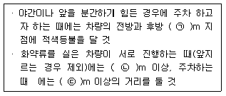
- ㉠ 20, ㉡ 100, ㉢ 50
- ㉠ 15, ㉡ 100, ㉢ 50
- ㉠ 20, ㉡ 150, ㉢ 100
- ㉠ 15, ㉡ 150, ㉢ 100
(정답률: 63%)
69. 화약류 운반용 축전지차의 구조의 기준으로 옳지 않은 것은?
- 차바퀴에는 고무타이어를 사용할 것
- 적재함 또는 짐받이 아래면과 차축과의 사이에는 적당한 완충장치를 할 것
- 축전지는 진동에 의한 영향을 받지 아니하는 것으로 하고, 사용전압은 50볼트 이하로 할 것
- 전동기정류자 · 제어기 · 전기개폐기 · 전기단자 그 밖의 불꽃이 생길 염려가 있는 전기장치에는 화재나 폭발의 발생 시 사용할 수 있는 소화장치를 할 것
(정답률: 57%)
70. 폭약 1톤에 해당하는 화공품의 수량으로 틀린 것은?
- 실탄 또는 공포탄 : 200만개
- 신관 또는 화관 : 5만개
- 미진동파쇄기 : 5만개
- 총용뇌관 : 200만개
(정답률: 43%)
71. 초유폭약에 의한 발파의 기술상의 기준으로 옳은 것은?
- 금이 가고 틈이 벌어지거나 공동이 있는 천공된 구멍에는 장약을 하는 일이 없도록 할 것
- 뇌관이 달린 폭약은 장전용호스로 조심스럽게 장전할 것
- 가연성가스가 0.5% 이상이 되는 장소에서는 발파하지 아니할 것
- 장전작업이 끝난 후 남은 초유폭약은 지체없이 폐기할 것
(정답률: 53%)
72. 꽃불류저장소 주위의 방폭벽은 저장소 바깥벽과의 거리가 최소 얼마 이상 되어야 하는가?
- 1m 이상
- 1.5m 이상
- 2m 이상
- 3m 이상
(정답률: 58%)
73. 화약류 1급 저장소에 폭약 40톤을 저장하려면 저장소의 외벽으로부터 보안물건에 이르기까지 최소한 몇 m 이상의 보안거리를 두어야 하는가? (단, 보안물건은 석유저장시설이다.)
- 550m
- 480m
- 270m
- 170m
(정답률: 29%)
74. 화약류저장소 외의 장소에 저장할 수 있는 화약류의 수량 중 토목 그 밖의 사업자가 6월 이내에 종료하는 사업을 위하여 저장할 수 있는 화약류의 수량으로 맞는 것은? (단, 화약류저장소가 있는 사람에 한함)
- 도폭선 300m
- 타정총용공포탄 10만개
- 미진동파쇄기 40개
- 화약 10kg
(정답률: 46%)
75. 화약류의 소지사용자가 발파 또는 연소에 관한 기술기준을 3회 위반하였을 때의 행정처분기준으로 옳은 것은?
- 경고
- 효력정지 15일
- 효력정지 1월
- 효력정지 3월
(정답률: 9%)
76. 화약류를 제조하거나 수입한 사람이 그 화약류의 안정도 시험결과 대통령령이 정한 기술상 기준에 미달한 경우의 처리는?
- 폐기 처리한다.
- 경찰서에 반납한다.
- 총포화약안전기술협회에 의뢰한다.
- 원료구입지에 반납한다.
(정답률: 60%)
77. 불발된 장약에 대한 조치 사항으로 옳지 않은 것은?
- 불발된 화약류를 회수할 수 없는 때에는 그 장소에 적당한 표시를 한 후 관할 경찰서에 신고할 것
- 불발된 천공된 구멍에 고무호오스로 물을 주입하고 그 물의 힘으로 메지와 화약류를 흘러나오게 하여 불발된 화약류를 회수할 것
- 불발된 발파공에 압축공기를 넣어 메지를 뽑아내거나 뇌관에 영향을 미치지 아니하게 하면서 조금씩 장전하고 다시 점화할 것
- 불발된 천공된 구멍으로부터 60cm 이상의 간격을 두고 평행으로 천공하여 다시 발파하고 불발한 화약류를 회수할 것
(정답률: 44%)
78. 화약류의 사용허가를 받지 아니하고 화약류를 발파 또는 연소시킬 경우의 벌칙으로 옳은 것은? (단, 법적 예외사항은 제외)
- 5년 이하의 징역 또는 1천만원 이하의 벌금형
- 3년 이하의 징역 또는 700만원 이하의 벌금형
- 2년 이하의 징역 또는 500만원 이하의 벌금형
- 1년 이하의 징역 또는 300만원 이하의 벌금형
(정답률: 48%)
79. 화약류취급소에 대한 설명으로 옳은 것은?
- 화약류의 사용허가를 받은 사람은 사용장소 부근에 화약류취급소를 반드시 설치해야 한다.
- 화약류취급소의 지붕은 나무판자로 하고, 철물류가 표면에 나타나지 아니하도록 한다.
- 화약류취급소는 철근콘크리트만을 사용하여 설치해야 한다.
- 정체량은 1일 사용예정량 이하로 하되, 초유폭약은 300kg을 초과하여 정체가 가능하다.
(정답률: 43%)
80. 제4종 보안물건에 해당하지 않는 것은?
- 철도
- 일반국도
- 지방도
- 고압전선
(정답률: 44%)
5과목: 굴착공학
81. 토질사면 파괴의 원인이 되는 전단강도를 감소시키는 요인으로 거리가 먼 것은?
- 느슨한 토립자의 진동
- 공급수압의 증가
- 흡수에 의한 점토의 팽창
- 충분한 흙다짐
(정답률: 55%)
82. 사력층이나 모래층의 수위저하나 수압저감을 목적으로 지표로부터 우물을 파고 그 속에 수중펌프를 설치하여 배수하는 공법은?
- 웰 포인트(well point) 공법
- 디프 웰(deep well) 공법
- 샌드 드레인(sand drain) 공법
- 물빼기 시추
(정답률: 28%)
83. 단위 중량이 1.8t/m3이고, 내부마찰각이 30°인 정지상태의 사질토층이 있다. 지표면 아래 10m 깊이에서의 수직용력(σv)과 수평응력(σh)으로 옳은 것은?
- σv= 18t/m2, σh= 12t/m2
- σv= 18t/m2, σh= 9t/m2
- σv= 8t/m2, σh= 4t/m2
- σv= 8t/m2, σh= 2t/m2
(정답률: 46%)
84. 터널 시공에서 발생하는 진행성 여굴의 원인으로 옳지 않은 것은?
- 짧은 굴진장
- 지하수의 집중 유입
- 지보설치 지연 또는 부적합한 지보 설치
- 시공기술의 미숙
(정답률: 44%)
85. 숏크리트(shotcrete)의 작용효과로 옳지 않은 것은?
- 내압 효과
- 풍화방지 효과
- 지반 아치형성 효과
- 암괴의 매달림 효과
(정답률: 58%)
86. Q-system의 암반분류에서 Q값이 30으로 평가되었다. 이 지반의 영구 지보압력(Proof)은? (단, 절리군의 수는 4개이고, 절리면 거칠기 계수는 4 이다.)
- 0.08kg/cm2
- 0.16kg/cm2
- 0.24kg/cm2
- 0.32kg/cm2
(정답률: 33%)
87. 개착공법 중 국내 지하철공사에서 가장 많이 쓰이는 전단면 굴착공법은? (단, 벽면이 토사층일 경우)
- 흙막이식 공법
- 분할식 공법
- 트렌치 공법
- 소굴식 공법
(정답률: 55%)
88. 발파공법과 비교한 T.B.M 공법의 일반적인 장점으로 옳지 않은 것은?
- 진동, 소음 등의 환경문제가 적다.
- 굴착에 따른 암반의 이완을 방지하기 쉬워 작업의 안전 확보가 용이하고 지보공을 경감시킬 수 있다.
- 암질이 양호한 경우 시공속도가 빠르고 공기 단축효과를 기대할 수 있다.
- 시공 중 암질의 변화, 용수량 등에 따라 굴착공법의 변경이 쉽다.
(정답률: 62%)
89. 흙의 통일분류법에서 사용되는 제1문자에 대한 설명으로 옳지 않은 것은?
- G : 자갈
- S : 실트
- O : 유기질토
- Pt : 이탄
(정답률: 52%)
90. 화성암을 구성하고 있는 조암광물의 크기(입도)는 주로 무엇에 의하여 결정되는가?
- 마그마의 밀도
- 마그마의 온도
- 마그마의 냉각속도
- 마그마의 화학성분
(정답률: 59%)
91. 터널굴착공법 중 메세르(messer) 공법에 대한 설명으로 맞는 것은?
- 점토, 실트 또는 사질토 등의 토사층 터널굴착에는 적용하기 어렵다.
- 지반침하의 발생 가능성이 높다.
- 곡선 터널을 시공하기에 적합한 공법이다.
- 강널판의 배치를 검토하면 굴착단면을 자유로이 선정할 수 있다.
(정답률: 28%)
92. 다음의 지하구조물 중 요구되는 안정성이 가장 큰 것은?
- 임시적인 광산 갱도
- 대규모 도로 터널
- 지하 철도역
- 지하 저장시설
(정답률: 53%)
93. 주변지반의 안정성, 주지보재 설계, 시공의 타당성, 콘크리트 라이닝 타설시기 등을 판단하기 위해 실시하는 터널계측 항목은?
- 내공변위 측정
- 라이닝 응력측정
- 천단침하 측정
- 지표침하 측정
(정답률: 40%)
94. 암반 내에 존재하는 불연속면의 방향성을 나타내기 위해 주향/경사 또는 경사방향/경사를 이용한다. 다음 중 현실적으로 발생 가능한 불연속면에 대한 방향성 표시로 올바른 것은?
- N45E/45SE
- N45W/45SE
- 45/45
- 125/100
(정답률: 62%)
95. 그림과 같이 반무한 탄성암체 표면의 한점 P에 200톤의 집중하중이 수직방향으로 작용할 경우 P점의 수직방향과 30°, 직선거리 20m 되는 지점 A의 수직응력 σZ는?
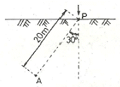
- 155kg/m2
- 15.5kg/m2
- 775kg/m2
- 77.5kg/m2
(정답률: 37%)
96. 터널시공에 따른 버력처리 계획 수립 시 고려하지 않아도 되는 사항은?
- 터널 단면의 크기
- 터널의 기울기
- 버력의 성상
- 동바리의 상태
(정답률: 56%)
97. 사면에 적용할 수 있는 안정화 공법에는 사면보호공법과 사면보강공법 등이 있다. 다음 중 사면보호공법에 해당하는 것은?
- 앵커공법
- 배수공법
- 경사완화공법
- 억지말뚝공법
(정답률: 43%)
98. 암반사면의 파괴형태 중 탁월한 불연속면이 1개 존재하고 이 불연속면의 경사방향이 사면의 경사방향과 거의 일치하며 사면의 경사가 불연속면의 경사보다 급한 경우 발생하는 것은?
- 원호파괴
- 평면파괴
- 쐐기파괴
- 전도파괴
(정답률: 40%)
99. 터널 상부 지반 높이가 낮은 천층 터널 시공 중 터널 전방의 지반조건이 불량하여 막장 붕락이 예상되는 경우 필요한 조치사항으로 옳지 않은 것은?
- 터널 굴착공법을 롱 벤치 컷 공법으로 변경한다.
- 터널 상반에 강관보강 그라우팅을 중첩설치한다.
- 막장 보호 숏크리트 및 록볼트를 시공한다.
- 프리그라우팅을 시공한다.
(정답률: 54%)
100. 지하수를 고려한 터널의 설계방법 중 비배수형 터널에 대한 설명으로 옳지 않은 것은?
- 방수포를 천정부와 측벽부에 설치하고 유입수를 터널내로 유도하여 배수처리하는 형식이다.
- 지하수위의 변화가 없으므로 주변환경에 영향을 미치지 않는다.
- 터널 주변에 작용하는 수압을 고려하여야 하므로 라이닝 두께가 커지고 때로는 철근이 요구된다.
- 지질조건이 불량하고 지하수 공급이 많을 때 주로 적용한다.
(정답률: 34%)